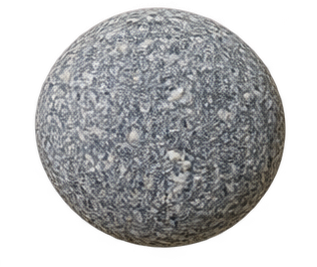
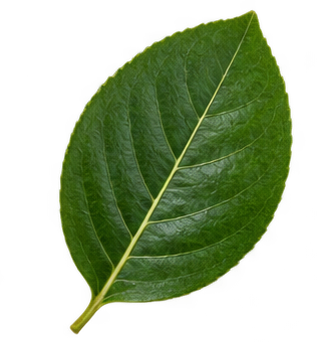

돌 하나, 나뭇잎 한 장이 생물이 되는 시간자연 조각으로
자연 조각으로
우리 모둠의 세상을 만들어요.
① 모둠 주제 정하기 ② 나의 생물 만들기 ③ 함께 모아 발표하기

＋ 그림 ＋
＝ 나만의 생물!① 모둠 주제 정하기 ② 나의 생물 만들기 ③ 함께 모아 발표하기

＋ 그림 ＋
＝ 나만의 생물!재료를 선택하고 크기·방향을 바꿔요. 눈, 다리, 무늬는 그려 넣어요. 빈 여백은 공동 작품에서 투명하게 보여요.
작품을 끌어 원하는 곳에 배치해요. 배치가 친구에게도 보여요.
수업을 연 뒤 학생 링크를 공유하세요. 모둠을 누르면 공동 작품을 크게 볼 수 있어요.